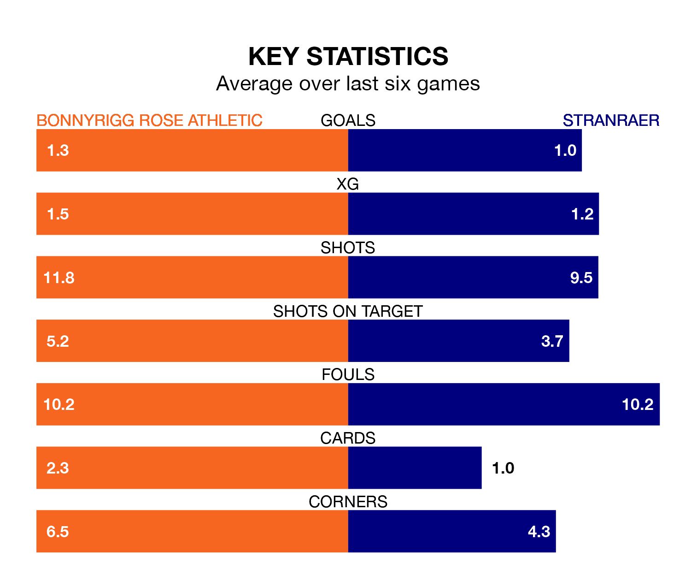

Stranraer travel to Bonnyrigg Rose Athletic on Saturday in League Two.
The visitors come into the game on the back of a defeat in their last match, having lost to East Fife 1-0 at home.
Bonnyrigg Rose, meanwhile, drew their last match, 0-0 against Forfar Athletic.
In the last 10 years, Bonnyrigg Rose and Stranraer have played each other on six occasions. Bonnyrigg Rose won three of them, Stranraer one, and they drew twice.
On average, Bonnyrigg Rose scored 1.5 goals and Stranraer 1.3 in those matches.
Their last meeting was on December 16, when Stranraer won 3-1 at home.
In Neil Martyniuk, Bonnyrigg Rose have one of the league's sharpest shooters so far this season. He has notched nine goals in 20 appearances, to sit third in the scoring charts.
Stranraer's top scorers, with four goals each, are Thomas Orr and James Dolan.
With 24 goals in 21 games so far this season, the visitors are scoring at below the league average rate with 1.1 goals per game. And they are conceding more than average, letting in 39 goals at a rate of 1.9 per game.
Athletic, meanwhile, are average scorers, with 1.4 goals per game. They have conceded 1.5 goals per game.
The home side are in disappointing form in League Two, with one win and three draws from their last six games.
With two wins and four losses over that period, Stranraer's form is similar – they have both taken six points from 18.
Stranraer are seventh in the table after 21 games, of which they have won six and drawn four, earning 22 points.
Bonnyrigg Rose are one place ahead of the away team in sixth, with six wins and six draws putting them on 24 points.
Updated: 15:45 (UTC), 02/02/24